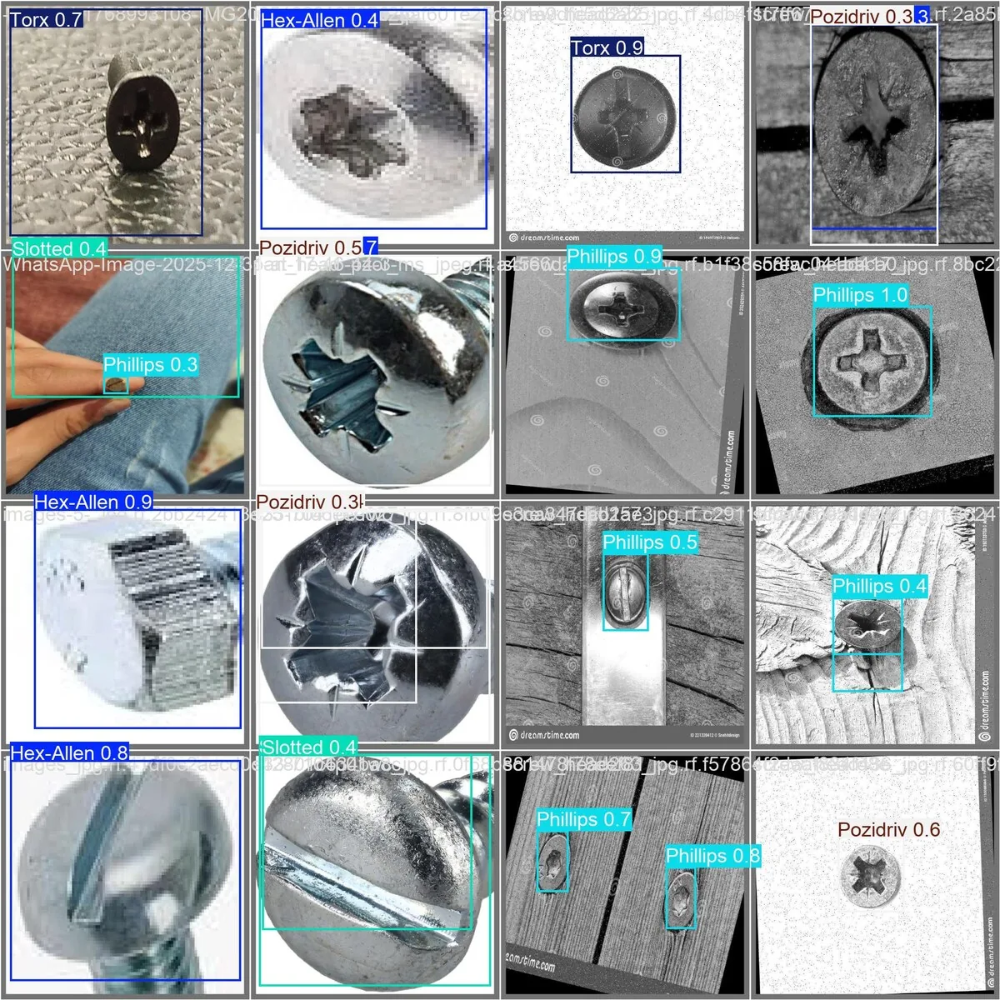
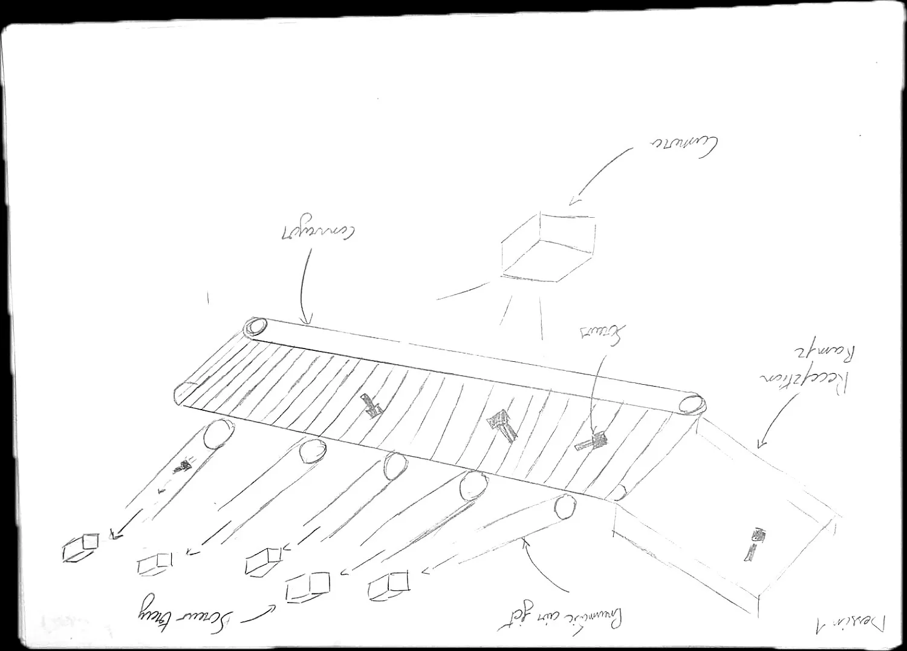
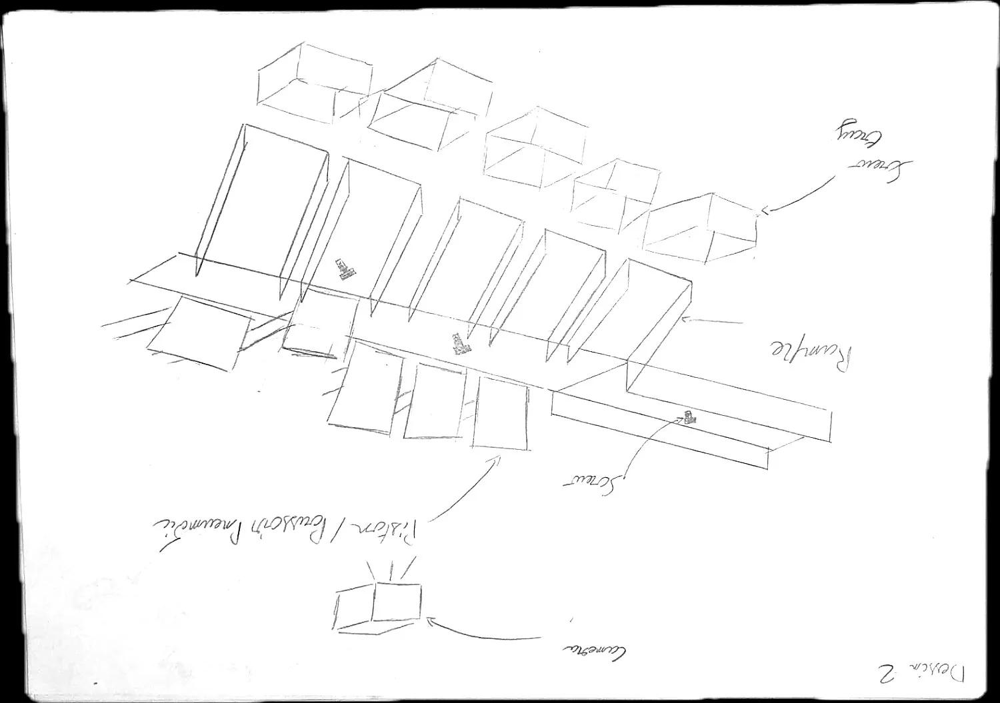
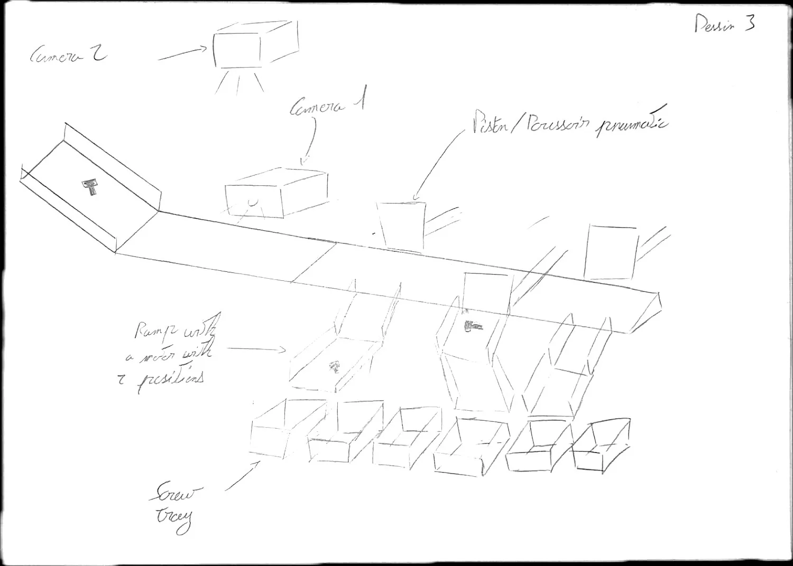
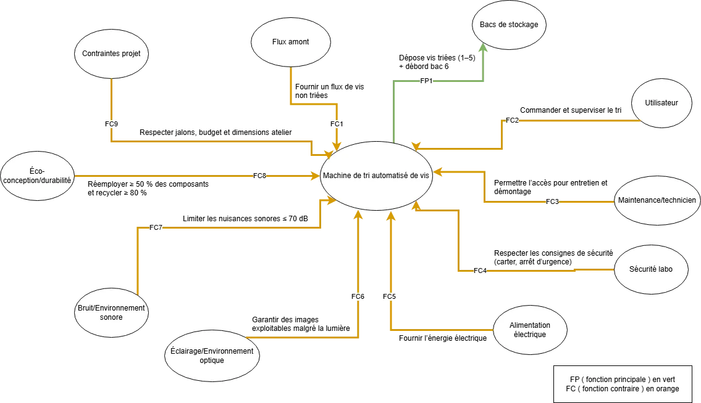
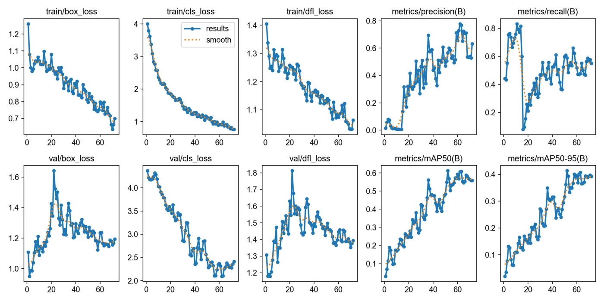
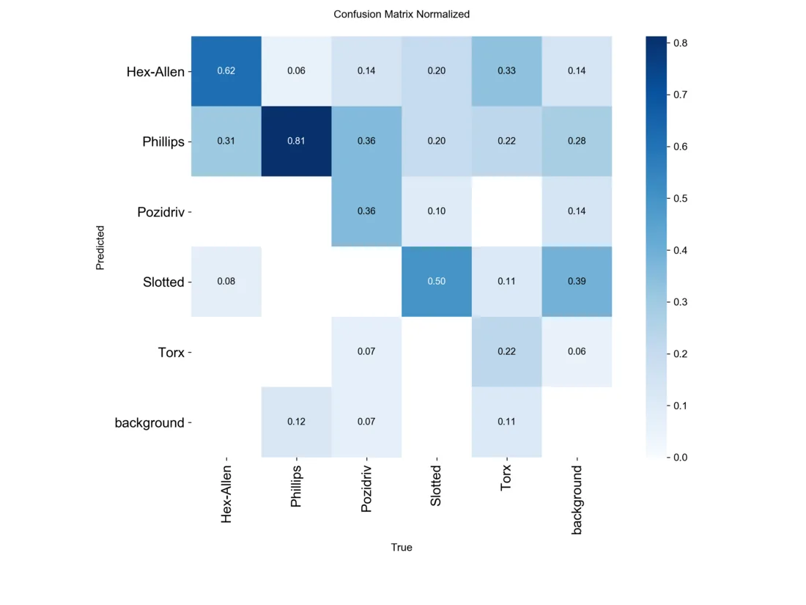
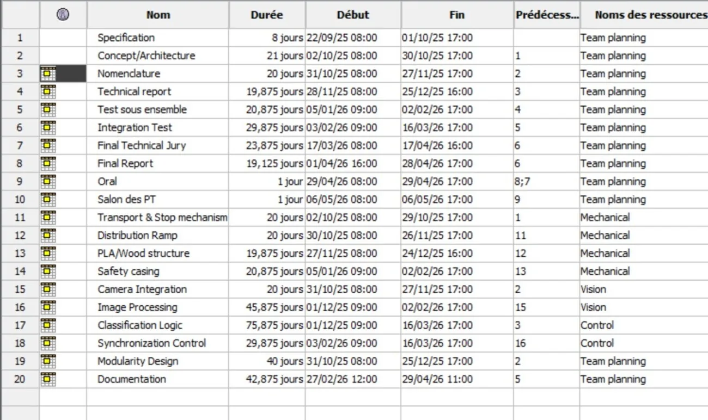

Tri Automatique de Vis
Une machine capable de reconnaître et de trier des vis toute seule, grâce à la vision par ordinateur. Deux caméras, un modèle de détection YOLO11 entraîné sur mesure, de la mesure OpenCV, le tout orchestré par un Raspberry Pi 5 et piloté depuis une interface web. Projet Technique de 4ᵉ année à l'Icam, que j'ai mené en tant que chef de projet.

Avant la moindre ligne de code, on pose les intentions au crayon : acheminement des vis, position des caméras, mécanisme de tri.

Concept 1. Tapis convoyeur + rampe de réception, vis poussées vers les bacs par jet d'air comprimé.

Concept 2. Rampe pivotante distribuant les vis vers les bacs de stockage.

Concept 3. Double caméra (verticale + horizontale) et poussoirs pneumatiques vers les bacs.

Trier de la visserie à la main, c'est répétitif et chronophage. L'objectif : automatiser entièrement la reconnaissance et la séparation de vis de types différents. On a commencé par cadrer le problème — fonction principale, contraintes d'éco-conception, sécurité, éclairage — via une analyse fonctionnelle complète (bête à cornes, diagramme pieuvre, cahier des charges).

Le cœur du projet. Un modèle YOLO11 entraîné sur un jeu de données de vis annoté à la main sous Roboflow, pour repérer chaque vis et reconnaître son type de tête. En parallèle, OpenCV mesure la longueur et le diamètre par étalonnage pixel→mm. Deux caméras coopèrent : l'une à la verticale (détection + mesure), l'autre à l'horizontale (classification de la tête).

Quatre familles d'empreintes à distinguer : Hex-Allen, Phillips, Slotted et Torx. La matrice de confusion sert de boussole : elle montre où le modèle hésite et oriente les itérations — ré-annotation, augmentation de données, ajustement du seuil de confiance — jusqu'à un tri fiable.
Côté matériel : un tapis convoyeur amène les vis sous les caméras, puis une rampe pivotante les dirige vers six bacs disposés en arc de cercle. Deux moteurs pas-à-pas (pilotés par drivers DM320T) animent le tapis et la rampe ; des écrans LCD affichent l'état en temps réel. Tout est cadencé par le Raspberry Pi 5 via ses GPIO.

En tant que chef de projet d'une équipe de quatre : découpage du travail en lots, planning, répartition entre les pôles mécanique, vision et contrôle, et arbitrages techniques au fil des imprévus. Spécification, nomenclature, tests sous-ensemble puis intégration — jusqu'à la soutenance et le salon des projets techniques.